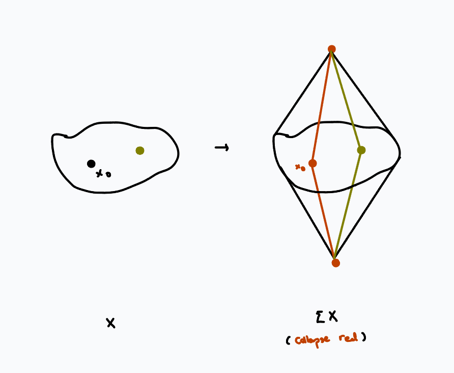
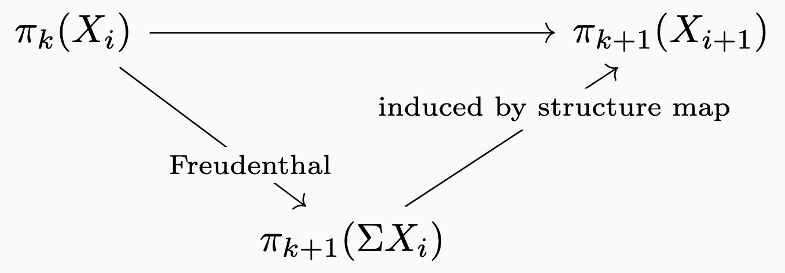
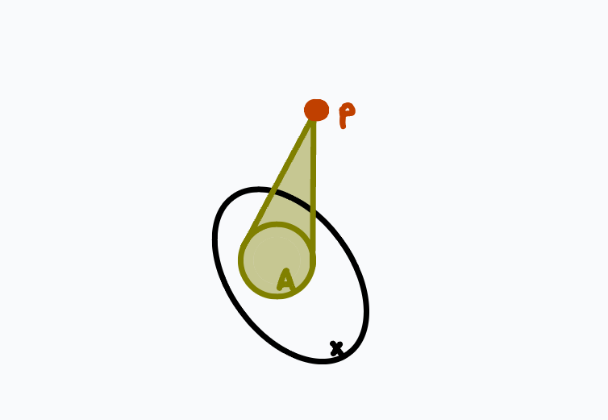
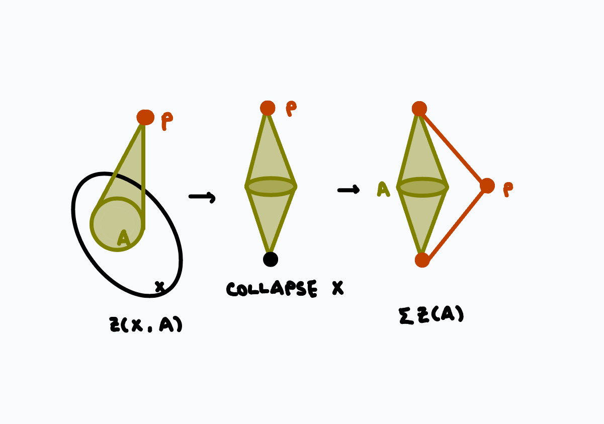

date: 11.19.2024
slogan: spectra represent cohomology theories.
Much of this talk is based on Brown's original 1961 paper, Cohomology Theories. You can also read about this theorem in Hatcher, in section 4.E.
In this talk, I first demonstrate how spectra arise naturally. Then, I show how to get a cohomology theory given a spectrum. Finally, I construct a spectrum given a cohomology theory.
This talk is accessible to those familiar with basic algebraic topology but not homotopy theory. I assume as little as possible and try to include all the details.
Take \(X\) to be a pointed path-connected space with the structure of a CW-complex.
Vague question. What are the dimension-independent properties of \(X\)?
To make sense of this question, we need a generalization of \(X\) that provides some space in "each dimension" which preserve the relevant structure of \(X\). In particular, we need to decide what "relavant structure" means.
A candidate for the "relavant structure" is homology, which is preserved under taking suspensions: we have isomorphisms $$\tilde{H}_{k+1}(\Sigma X) \xrightarrow{\sim} \tilde{H}_{k}(X)$$ in reduced homology, coming from Mayer-Vietoris by viewing suspension as gluing together two cones (recall cones are contractible.) Taking the \(k\)-suspension of \(X\) simply shifts the indices of the homology groups by \(k\), so homology is essentially invariant under suspension.
Definition. A suspension spectrum is a sequence of spaces \(\{X_i\}_{i \in \mathbb{Z}}\) with structure maps $$\Sigma X_i \xrightarrow{\sim} X_{i+1}$$ which are isomorphisms.
How much structure does this invariance of homology groups force? The natural next thing to wonder is whether homotopy groups are also invariant under suspension. Clearly this isn't true on the nose: \(S^k = \Sigma^{k-1}S^1\), and homotopy groups of spheres are not so simple. But homotopy groups are invariant under certain connectedness conditions:
Freudenthal suspension theorem. Suppose \(X\) is \(n\)-connected. The map $$X \rightarrow \Omega \Sigma X$$  loops of suspension of X"> induces the map $$f_k: \pi_k(X) \rightarrow \pi_k(\Omega \Sigma X) \simeq \pi_{k+1}(\Sigma X)$$ where the last isomorphism is given by the suspension-loop adjunction. Then \(f_k\) is an isomorphism for \(k \leq 2n\) and an epimorphism for \(k = 2n+1\).
This theorem is a direct consequence of homotopy excision.
Also, by the long exact sequence in relative homotopy, we have isomorphisms $$\pi_k((CX)_{+},X) \xrightarrow{\sim} \pi_{k-1}(X)$$ and since cones are contractible, \(\pi_k(\Sigma X,(CX)_{-}) = \pi_k(\Sigma X).\) Substituting back into \(g_k\) we have the desired isomorphisms/surjection.
(You can work through the homotopy excision and the suspension-loop adjunction explicitly to see \(g_k\) is the same map as \(f_k\).)
Unfortunately, if \(X\) doesn't start out very well-connected, this theorem doesn't say much. But recall that taking suspensions raises the connectivity: the first nonzero homotopy group is also the first nonzero homology group, and taking suspension shifts the indices of the homology groups by one, so if \(X\) is \(n\)-connected, then \(\Sigma X\) must be \((n+1)\)-connected, and \(\Sigma^k X\) is \((n+k)\)-connected. As we keep on taking higher and higher suspensions, more and more homotopy groups stay the same, and we can make the following definition.
Definition. The \(i\)-th stable homotopy group of \(X\) is $$\pi_i^s(X) = \lim_n \pi_{n+i}(\Sigma^i X).$$
(Note: this is a colimit in the category of abelian groups.)
What if, instead, we took the "relevant structure" to mean directly that the homotopy groups are preserved? In other words, we wonder whether there is a sequence of spaces \(\{X_i\}_{i\in \mathbb{Z}}\) such that \(X_0=X\) and $$ \pi_k(X_i) = \pi_{k+1}(X_{i+1}).$$ We may rewrite this condition on homotopy groups by using the suspension-loop adjunction, as $$\pi_k(X_i)=[S^k,X_i] = [S^{k+1}, X_{i+1}] \simeq [S^k, \Omega X_{i+1}] = \pi_k(\Omega X_{i+1}).$$ This is essentially requiring weak equivalences.
Definition. An \(\Omega\)-spectrum is a sequence of CW-complexes \(\{X_i\}_{i \in \mathbb{Z}}\) with weak equivalences $$X_i \rightarrow \Omega X_{i+1}.$$
Notice by Whitehead's theorem, the weak equivalences are in fact homotopy equivalences. This, then, also means that \(X_i\) are infinite loop spaces.
Example. Our favorite example of spaces with simple homotopy groups are Eilenberg-Maclane spaces \(K(G,n)\), whose only nontrivial homotopy group is \(\pi_n(K(G,n)) = G\). Then fixing \(G\), \(K(G,-)\) gives an \(\Omega\)-spectrum.
Motivated by this, we make the following definitions.
Definition. A (CW-)spectrum consists of a sequence \(\{X_i\}_{i \in \mathbb{Z}}\) of pointed CW-complexes with structure maps \(\Sigma X_i \rightarrow X_{i+1}\).
Definition. The homotopy groups of a spectrum \(X=\{X_i\}_{i \in \mathbb{Z}}\) is the colimit $$\pi_n(X) = \lim_n \pi_{n+i}(X_i)$$ in the category of abelian groups, where the maps \(\pi_k(X_i) \rightarrow \pi_{k+1}(X_{i+1})\) are defined by factoring through: 
We will discuss a bit more about the general notions of spectra in the encore. For now, when I say spectra I mean \(\Omega\)-spectra.
Let \(\mathcal{C}\) be the category of CW-pairs, and \(\mathbf{Ab}\) the category of abelian groups. Recall the Eilenberg-Steenrod axioms:
Definition. A generalized cohomology theory consists of functors \(H^q:\mathcal{C}^{op} \rightarrow \mathbf{Ab}\) for \(q \in \mathbb{Z}\) with a collection of natural isomorphisms \(\partial: H^q(A) \rightarrow H^{q+1}(X,A)\) satisfying
Examples. Beyond the ordinary cohomology theories, \(K\)-theory and cobordism are also cohomology theories.
The motivating example for the main theorem is the fact that for ordinary cohomology, \(H^q(X, G) \simeq [X, K(G,n)]\). If you're unfamiliar with this fact, I quite like the first chapter of Cohomology Operations and Applications in Homotopy Theory by Mosher and Tangora.
We are almost ready to state the main theorem. Given a pair \((X,A)\), let \(Z(X,A)\) be \(X\) with an unreduced cone over \(A\), with basepoint \(p\) at the tip of the cone:  Notice that \(Z(X,\varnothing) = X \sqcup \{p\}.\)
Brown Representability Theorem. A cohomology theory \(\{H^q, \partial\}\) corresponds to an \(\Omega\)-spectrum \(Y=\{Y_q\}\), unique up to homotopy, such that there is a natural isomorphism $$T^q:[Z(-),Y_q] \xrightarrow{\sim} H^q(-)$$ such that \(\partial T^q = T^{q+1} \partial.\)
Given an \(\Omega\)-spectrum \(Y = \{Y_q\}\), we want to show \([Z(-),Y_q]\) specify cohomology groups. The boundary map \(\partial\) of the associated cohomology theory is defined as follows: take $$d: Z(X,A) \rightarrow \Sigma Z(A,\varnothing)$$  to be the map collapsing \(X\) to the basepoint, which induces $$[\Sigma Z(A),Y_q] \xrightarrow{d_*} [Z(X,A), Y_q]$$ which, by the suspension-loop adjunction, gives $$\partial: [Z(A),Y_{q+1}] \rightarrow [Z(X,A), Y_{q}].$$
Now we show \(\{[Z(-),Y_q], \partial\}\) is a cohomology theory. First, \([Z(-),Y_q]\) actually lands in \(\mathbf{Ab}\):
Now all that's left to show \(\{[Z(-),Y_q], \partial\}\) is a cohomology theory is to simply check the Eilenberg-Steenrod axioms:
This section is mostly following Brown. (Notice Brown's theorem is actually a bit more general as it classifies all the representable functors, so here we modify the argument, specializing to cohomology theories.)
Suppose we are now given a cohomology theory \(\{H^q(-),\partial\}\), we will now construct an \(\Omega\)-spectrum \(\{Y_q\}\) such that \(H^q(-) \simeq [Z(-),Y_q]\) and that this equivalence is compatible with \(\partial\).
Reduction to \(S^n\). Since \(Z(X,A)\) is a pointed CW-complex, it suffices to construct \(\{Y_q\}\) with the specified properties for pairs \((S^n, \varnothing).\) (The construction for \((D^n, \varnothing)\) is trivial since cells are contractible.) This is because if we construct \(X\) cell-by-cell with the intermediate steps \(X_1 \subset X_2 \subset \cdots\), inductively excision gives that \(\{Y_q\}\) satisfy the relevant properties for \((X_i, S^r)\) if \(X_i\) is formed from \(X_{i-1}\) by gluing an \(r\)-cell. Then the long exact sequence with the five lemma gives that \(\{Y_q\}\) satisfy the relevant properties for \((X, \varnothing)\), and we can use the long exact sequence and five lemma again for the pair \((X,A)\) for any subcomplex \(A.\) This also takes care of the compatibility with \(\partial.\)
We want to construct \(Y_q\) such that for \((S^n,\varnothing),\) \(H^q(S^n) \simeq [Z(S^n,\varnothing),Y_q].\) We do so inductively, essentially adding spheres for generators and gluing cells to kill relations. To do this, we first recall the Yoneda natural transformation.
Lemma. Given \(W\) a CW-complex and \(u \in H^q(W)\), the map defined by pulling back the cohomology class $$[X,W] \rightarrow H^q(X)$$ $$[g] \mapsto H^q(g)(u)$$ gives rise to a natural transformation \(T(u): [-,W] \rightarrow H^q(-).\)
Now, we inductively construct a sequence of spaces \(W_i\) and classes \(u_i \in H^q(W_i)\) with the following properties:
Choose generators \(g_{\alpha}^n\) for \(H^q(S^n)\), and let \(W_0 = \bigvee_{\alpha,n} S^n_{\alpha}\). Let \(h_{\alpha}^n:S^n \rightarrow W_0\) be the inclusion map onto the sphere indexed by \(\alpha\). Then, one consequence of the Eilenberg-Steenrod axioms is \(H^q(W_0) = \prod_{\alpha,n} H^q(S^n_{\alpha})\), which means there is some element \(u_0 \in H(W_0)\) that pulls back along each \(h_{\alpha}^n\) to \(g_{\alpha}^n\). Since \(\{g_{\alpha}^n\}\) generate \(H^q(S^n)\) for any \(n\), clearly \(T(u_0)\) is surjective.
Now the inductive step: suppose we have \(W_{i-1}\) and \(u_{i-1}\) with the desired properties. Suppose \([f_{\beta}]\) generates the kernel of $$T(u_{i-1}):[S^n,W_{i-1}] \rightarrow H^q(S^i)$$ then let \(A = \bigvee_{\beta}S^i_{\beta}\) be a wedge of \(i\)-spheres, \(f=\bigvee f_{\beta}\), and \(Z_f\) the mapping cone of \(f.\) Then let \(W_i = Z_f.\)
Another consequence of the Eilenberg-Steenrod axioms is that the sequence $$H^q(Z_f) \xrightarrow{H^q(\iota)} H^q(W_{i-1}) \xrightarrow{H^q(f)} H^q(A)$$ is exact. Then notice \(H^q(f)(u_{i-1})=0\), so there must be some \(u_i \in H^q(W_i)\) such that \(H^q(\iota)(u_i) = u_{i-1}.\)
The inclusion also induces \(\iota_*:[S^m,W_{i-1}] \rightarrow [S^m,W_i]\). Notice \(T(u_{i-1}) = T(u_i) \circ \iota_*.\) Then since \(T(u_{i-1})\) is surjective for all \(m\), so is \(T(u_{i})\). \(W_i\) was formed by adding \(i+1\)-cells to \(W_{i-1}\) so \(\iota\) is surjective for \(m < i.\) Then since \(T(u_{i-1})\) is injective for \(m< i\), so is \(T(u_{i})\). In the case \(m=i\), the kernel of \(T(u_{i-1})\) is contained in the kernel of \(\iota_*\), and so \(T(u_i)\) is injective.
Now, let \(Y_q = \bigcup W_i.\) By additivity, there is a \(u \in H^q(Y_q)\) which restructs to \(u_i\) for each \(i\), which gives the desired natural isomorphism. Uniqueness comes from Whitehead's theorem. The fact that it forms an \(\Omega\)-spectrum comes from the isomorphism \(H^q(X,x_0) \xrightarrow{\sim} H^{q+1}(\Sigma X,x_0)\) which, combined with the suspension-loop adjunction, gives $$[X,Y_q] \simeq [\Sigma X, Y_{q+1}] \simeq [X, \Omega Y_{q+1}]$$ and since we're working with CW-complexes, Whitehead gives the homotopy equivalence \(Y_q \simeq \Omega Y_{q+1}.\)
At this point, we want to say the sentence "cohomology theories are representable functors." However, this doesn't quite make sense, since each cohomology theory is a bunch of functors packaged together, and the representing objects seem to be spectra. This isn't super clean and makes us want to define cohomology theories for some category of spectra so that we can actually say that sentence.
To get a category of spectra, we need a way of defining morphisms of spectra. Our first instinct is maybe level-wise maps of spaces (perhaps with a shift) which is compatible with structure maps. Unfortunately, this definition is too rigid to be useful; it turns out one possible definition involves cofinal subspectra, and you can then define homotopy classes of maps using the cylinder spectrum. You can read about this whole story here. (There are also other categories of spectra, each with its own advantages.) From there, you can define the cohomology theory represented by the spectrum \(E\) as \(E^n(X) = [X, \Sigma^n E].\)
The homotopy category of spectra is the stable homotopy category. Spectra form the natural home for stable homotopy theory; if you want to read about this, this note by Cary Malkiewich is a really great place to start. It would also be remiss to not point out the classical reference, Stable Homotopy and Generalized Homology by Adams.
Last revised on 12.14.2024.